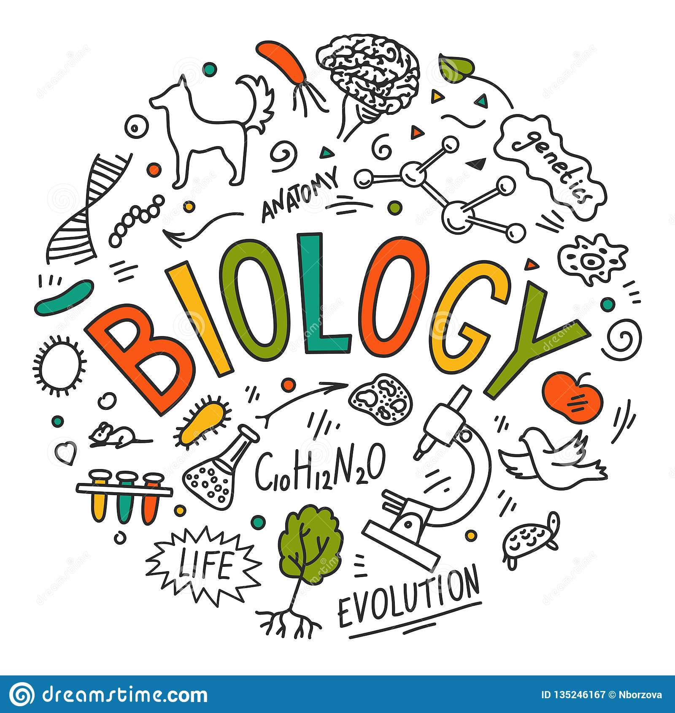

My Batches
(Batch Details)

Maths Batch
There are two maths batches for CBSE classes 9th and 10th respectively
and two batches for ICSE classes 9th and 10th.
Evening batches with flexible timings
Science Batch
There are one science batch each for CBSE class 9th and 10th and one batch for ICSE class
10th science and one for class 9th ICSE
Evening batches with flexible timings
s
Biology Batches
There is one batch for biology for class 11th and one foe class 12th
Evening batch with flexible timings